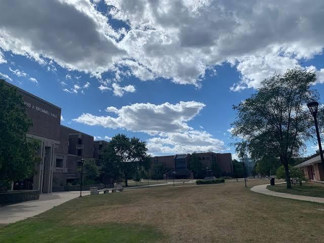
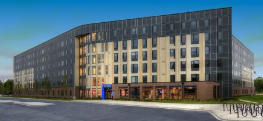
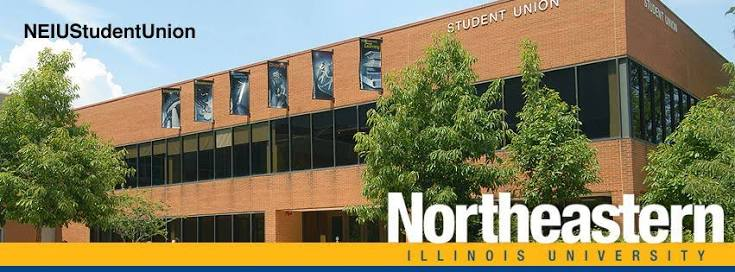

<!DOCTYPE html>
<html>
    <head>
        <title>NEIU Campus Map</title>

         <link rel="stylesheet" href="https://unpkg.com/leaflet@1.9.4/dist/leaflet.css"
           integrity="sha256-p4NxAoJBhIIN+hmNHrzRCf9tD/miZyoHS5obTRR9BMY="
           crossorigin=""/>

         <script src="https://unpkg.com/leaflet@1.9.4/dist/leaflet.js"
           integrity="sha256-20nQCchB9co0qIjJZRGuk2/Z9VM+kNiyxNV1lvTlZBo="
           crossorigin=""></script>
		   
<style type="text/css">
  html, body { margin: 0; padding: 0; height: 100%; }
  #map { min-height: 100%; }
</style>

    </head>

    <body>
        <div id="map"></div>

        <script type="text/javascript">

          var map = L.map('map', {
              center: [41.9797,-87.7176],
              zoom: 16
          });

        
var canvas = L.tileLayer('https://server.arcgisonline.com/ArcGIS/rest/services/Canvas/World_Light_Gray_Base/MapServer/tile/{z}/{y}/{x}', {
   attribution: 'Tiles © Esri — Esri, DeLorme, NAVTEQ',
   maxZoom: 16,
   minZoom: 4
}).addTo(map);

var imagery = L.tileLayer('https://server.arcgisonline.com/ArcGIS/rest/services/World_Imagery/MapServer/tile/{z}/{y}/{x}', {
    attribution: 'Tiles © Esri — Source: Esri, i-cubed, USDA, USGS, AEX, GeoEye, Getmapping, Aerogrid, IGN, IGP, UPR-EGP, and the GIS User Community'
});

var basemaps = {
    "Light Gray Canvas": canvas,
    "Satellite Imagery": imagery
};


L.control.layers(basemaps).addTo(map);

var MyIcon = L.icon({
    iconUrl: 'school.png', 
    iconSize:     [38, 38], 
    iconAnchor:   [16, 32], // the center of the icon will be aligned so that this point is at the marker's geographical location
    popupAnchor:  [0, -10] // point from which the popup should open, relative to the iconAnchor
});

var marker1 = L.marker([41.9803856,-87.7168961],{icon:MyIcon, alt: "BBH Hall"}).addTo(map);
var marker2 = L.marker([41.9776673,-87.7171996],{icon:MyIcon, alt: "PE Complex"}).addTo(map);
var marker3 = L.marker([41.9803831,-87.7188964],{icon:MyIcon, alt: "Ronald Williams Library"}).addTo(map);
var marker4 = L.marker([41.9796872,-87.71973],{icon:MyIcon, alt: "The Nest"}).addTo(map);
var marker5 = L.marker([41.9813672,-87.7184329],{icon:MyIcon, alt: "Student Union"}).addTo(map);

var pic1 = '';
var pic2 = '';
var pic3 = '';
var pic4 = '';
var pic5 = '';

marker1.bindPopup('<p style="color: rgb(80,110,140);"> <b>Bernard Brommel Hall </b><br> Students take classes here. </p>'+pic1);
marker2.bindPopup('<p style="color: rgb(80,110,140);"> <b>Physical Education Complex</b> <br> Students can workout here. </p>'+pic2);
marker3.bindPopup('<p style="color: rgb(80,110,140);"> <b>Ronald Williams Library</b> <br> Students can study and get research help here. </p>'+pic3);
marker4.bindPopup('<p style="color: rgb(80,110,140);"> <b>The Nest</b> <br> On campus housing. </p>'+pic4);
marker5.bindPopup('<p style="color: rgb(80,110,140);"> <b>Student Union </b><br> Students can handle campus services and attend events here. </p>'+pic5);

        </script>
   </body>
</html>